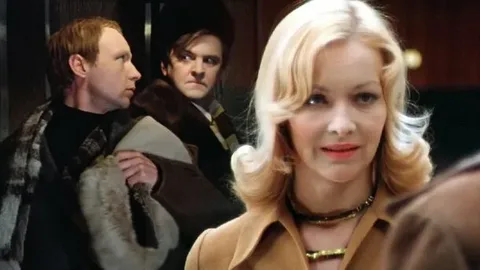
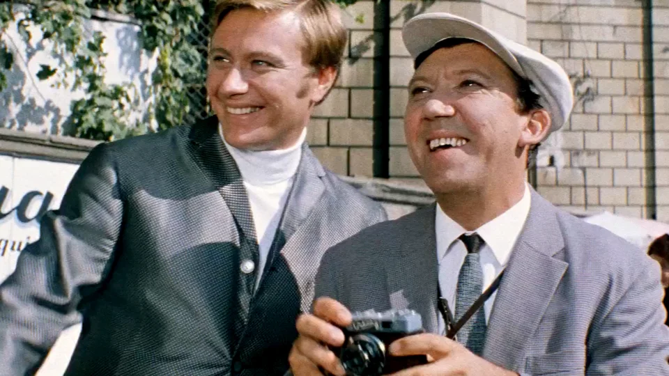

Многослойность смыслов
Кинематограф застоя — время парадоксов. Пока официальные сводки говорили о стабильности, кино уходило в глубокую рефлексию о месте человека в мире застывших форм.
Расцветает жанр бытовой мелодрамы. Фильмы Рязанова и Данелии предлагали зрителю уютную альтернативу официальной идеологии, становясь по-настоящему народными.
«Счастье — это когда тебя понимают»
— Доживем до понедельника (1968)
Философское иносказание
Вершиной авторского кино становятся работы Тарковского. Его фильмы превращают экран в пространство метафизического поиска, выходящего за рамки советского контекста.
Визуальное наследие
Знаковые картины эпохи

Ирония судьбы (1975)
Главная лирическая комедия страны, ставшая частью культурного кода каждого советского человека.

Бриллиантовая рука (1968)
Вершина комедийного жанра Гайдая, разошедшаяся на цитаты по всему Союзу.